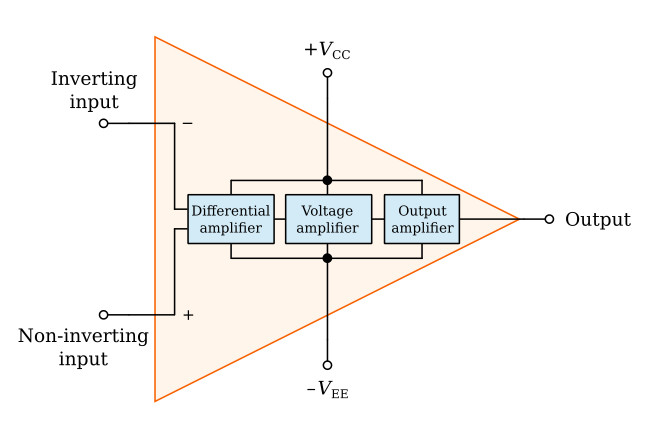
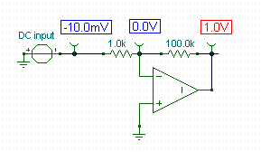
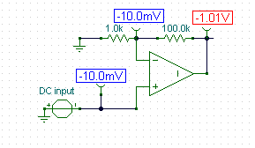

Operation Amplifier
An operational amplifier (op-amp) is a versatile electronic component that is widely used in various applications, such as amplification, filtering, and signal conditioning. It is a high-gain, direct-coupled amplifier with differential inputs and a single-ended output. Here is a breakdown of its block diagram and some common configurations.
.png)
Block Diagram:
An op-amp typically consists of the following key blocks:
Differential Amplifier: This block takes in the voltage difference between the two input terminals (inverting and non-inverting) and amplifies it.
Voltage Amplifier: The amplified voltage from the differential amplifier is further amplified by a high-gain voltage amplifier stage.
Output Stage: This block provides a buffered output voltage that is capable of driving external loads.
Power Supplies: Op-amps require power supplies to operate. The positive and negative supply voltages provide the necessary biasing and operating voltage levels for the internal circuitry.
Ideal Operational Amplifier:
The ideal op-amp is a theoretical model that assumes certain characteristics to simplify circuit analysis. The ideal op-amp possesses the following ideal properties:
Infinite Open-Loop Gain (A): The voltage gain of the op-amp is assumed to be infinite, meaning it can amplify the input signal with perfect accuracy.
Infinite Input Impedance: The input impedance of an ideal op-amp is considered to be infinite, ensuring that no current flows into the input terminals.
Zero Output Impedance: The output impedance of an ideal op-amp is considered to be zero, meaning it can drive any load without affecting its output voltage.
Infinite Bandwidth: The ideal op-amp has an infinite bandwidth, allowing it to amplify signals of any frequency without distortion.
Inverting Amplifier:
The inverting amplifier is a commonly used configuration of an op-amp. It produces an output that is the inverted and amplified version of the input voltage applied to the inverting terminal. The non-inverting terminal is typically connected to a reference voltage (e.g., ground). The gain of the inverting amplifier is determined by the ratio of the input and feedback resistors.
Non-Inverting Amplifier:
The non-inverting amplifier is another popular configuration. In this setup, the input signal is applied to the non-inverting terminal, while the inverting terminal is connected to the output via a feedback resistor. The output voltage is in phase with the input voltage, and the gain is determined by the ratio of the feedback and input resistors.
Both the inverting and non-inverting amplifiers utilize negative feedback, which improves stability, linearity, and reduces distortion in the amplifier circuit.